Portfolio #Cartes #Geoviz #DataViz
@Boris Mericskay
Twitter
Medium
(Géo)Visualisation de données
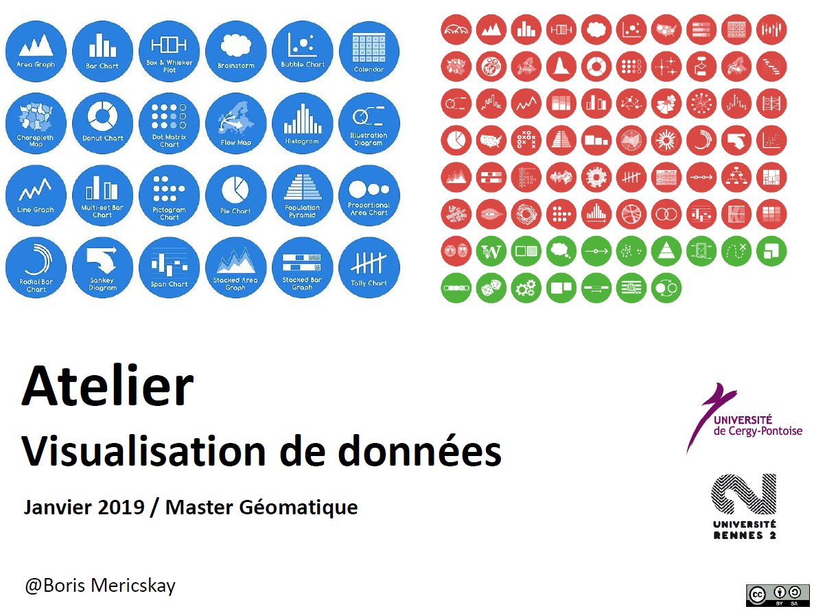
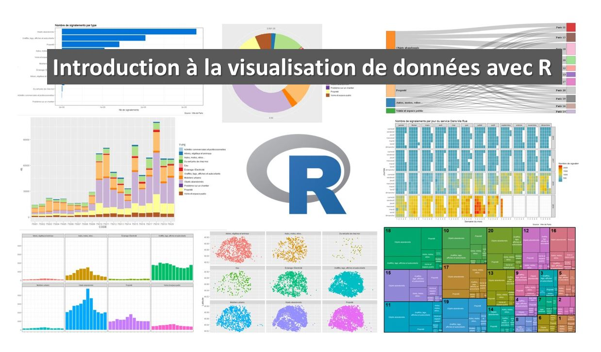
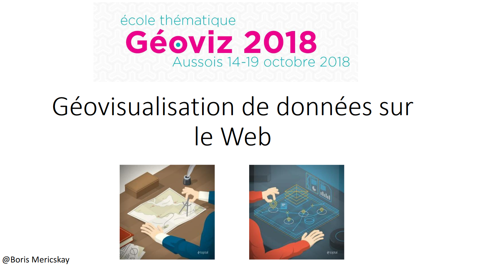
Webmapping
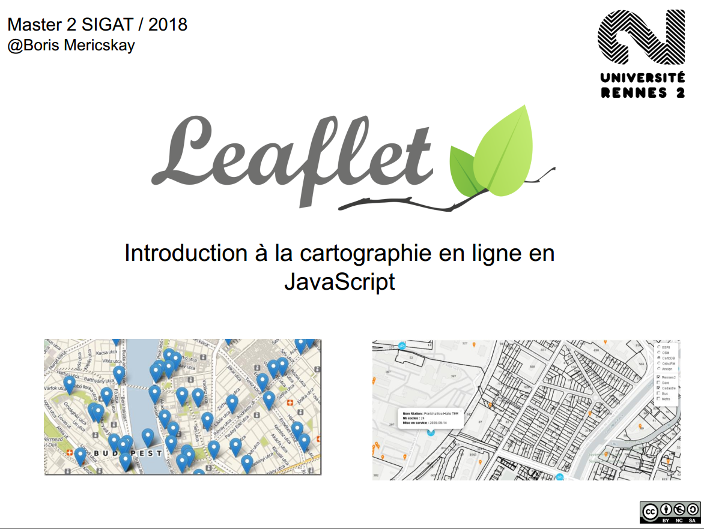
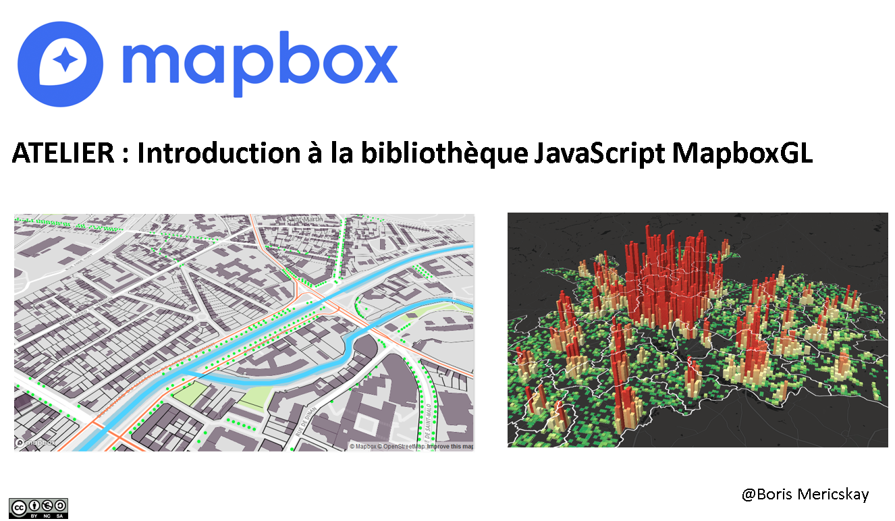
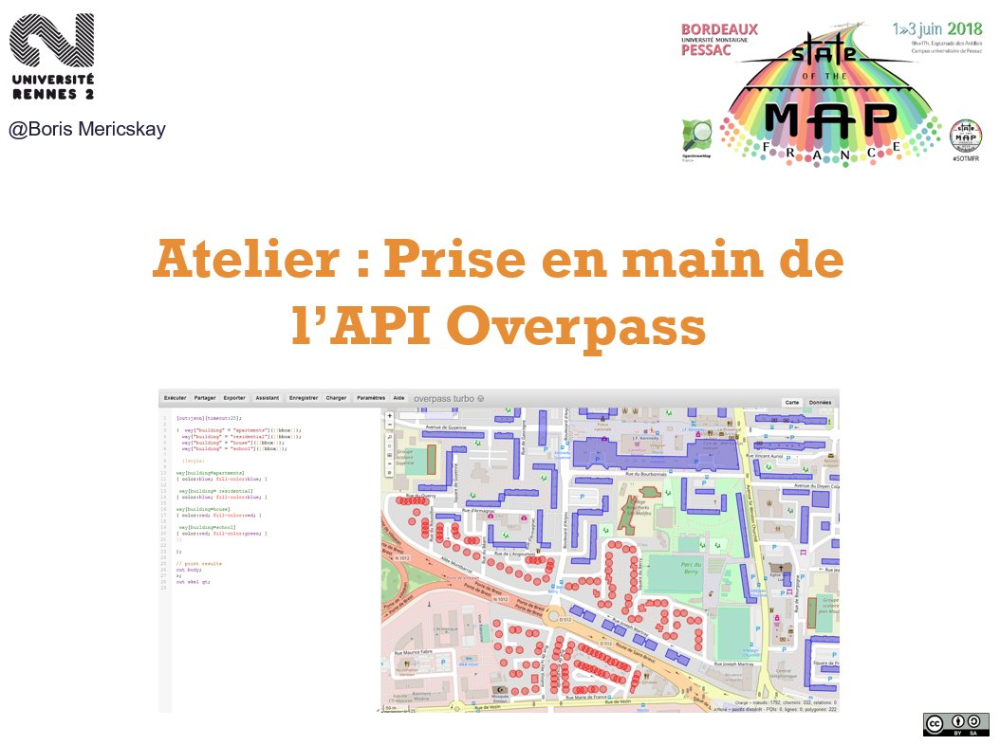
SIG, Analyse spatiale et Cartographie
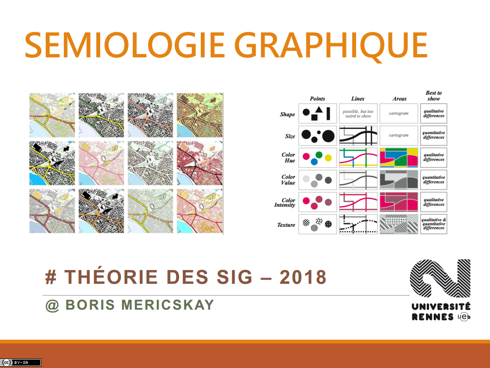
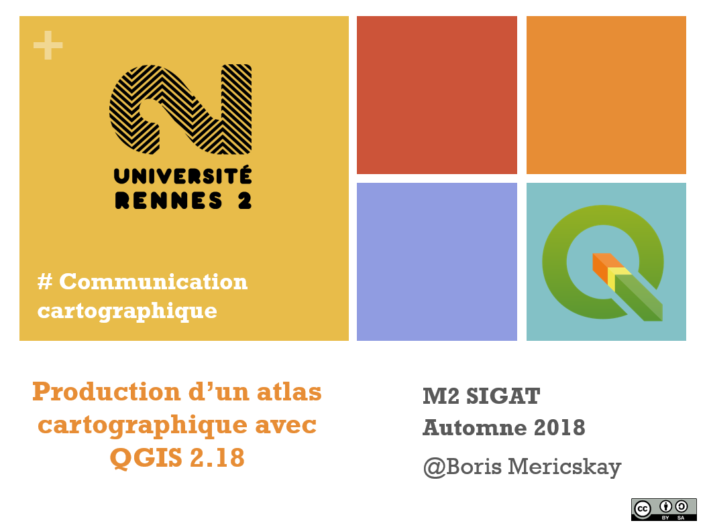
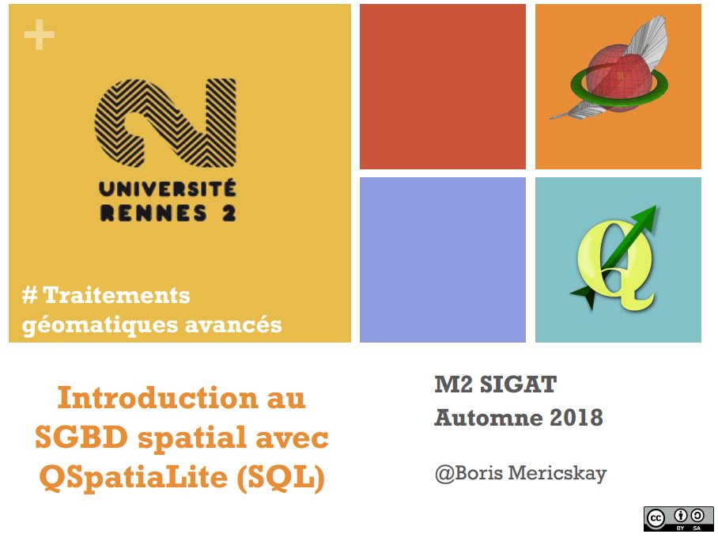
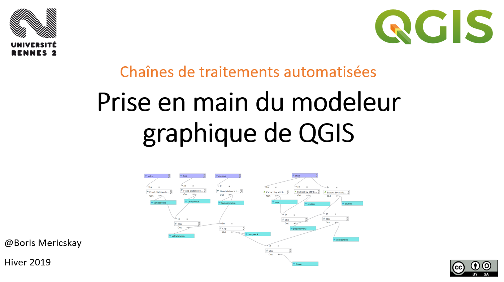
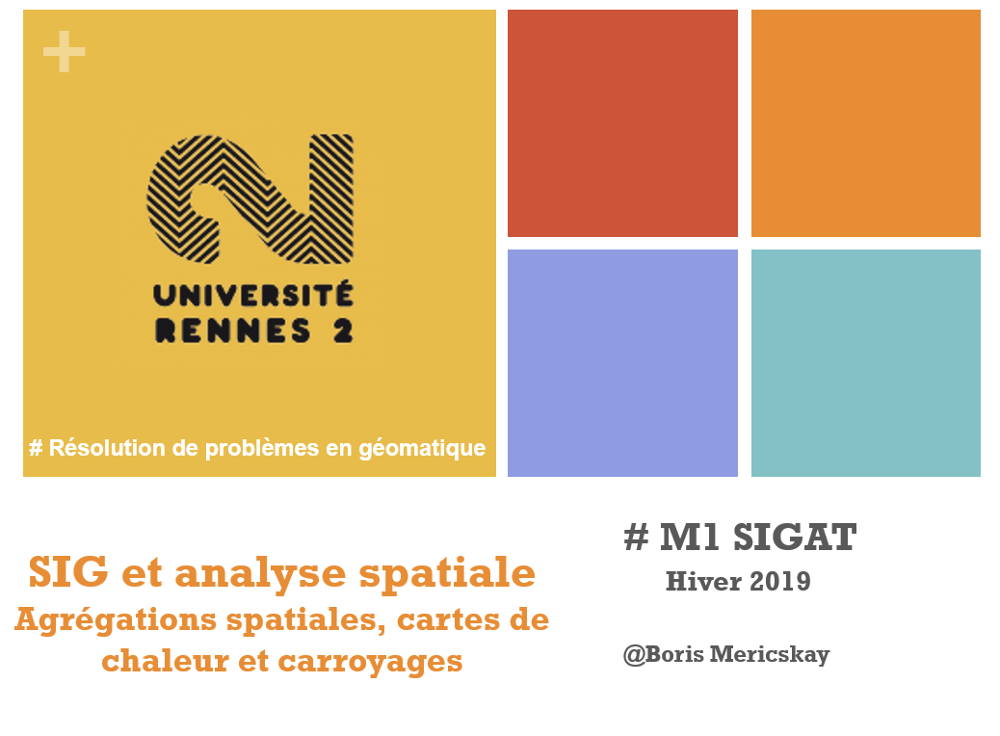
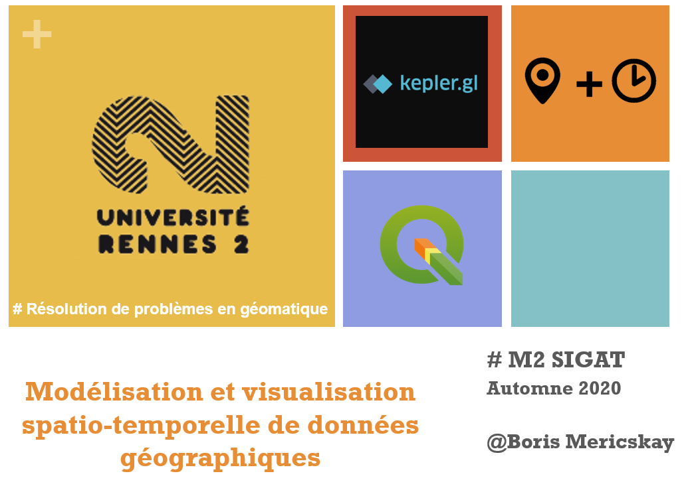
Préparation et manipulations de données (spatiales) dans R
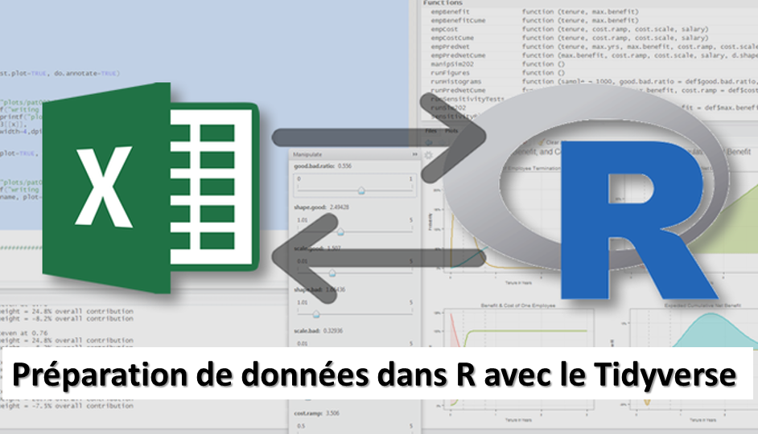
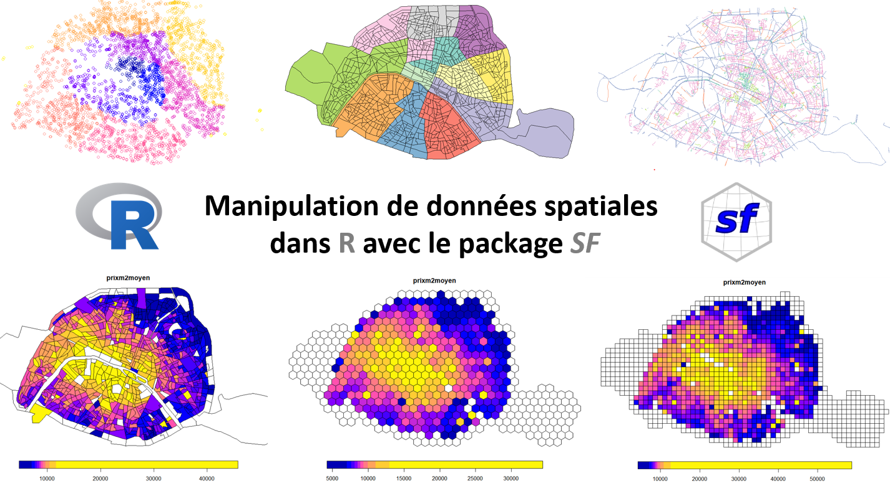
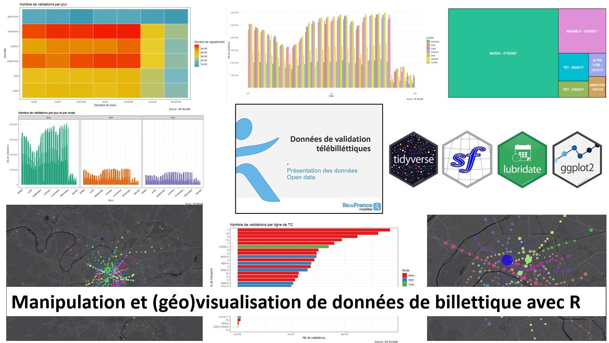
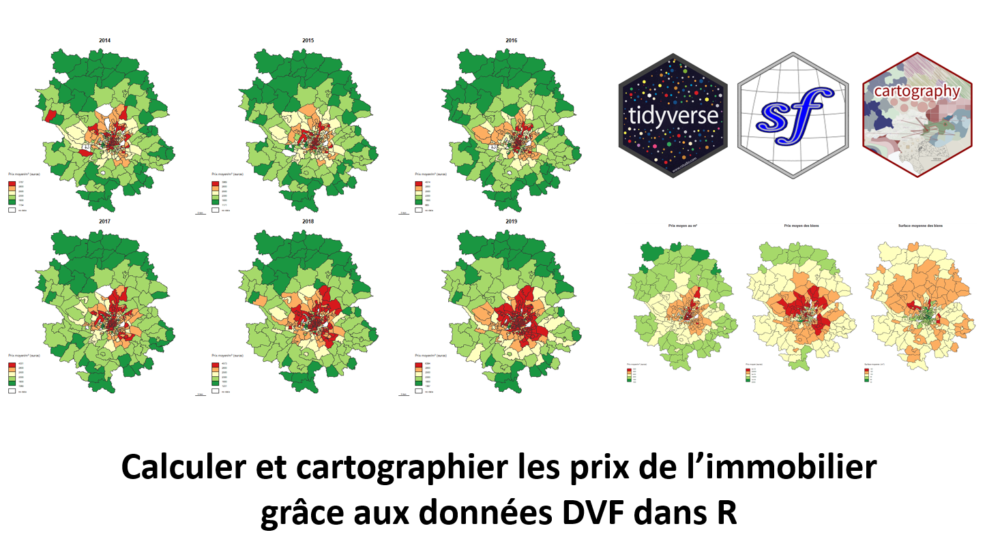
Site
Accueil
France Communes
Disgressions cartographiques
DataViz
GeoViz avec KeplerGL
GeoViz avec MapboxGL
Tableaux de bord cartographiques
Cours et formations
Publications
A propos